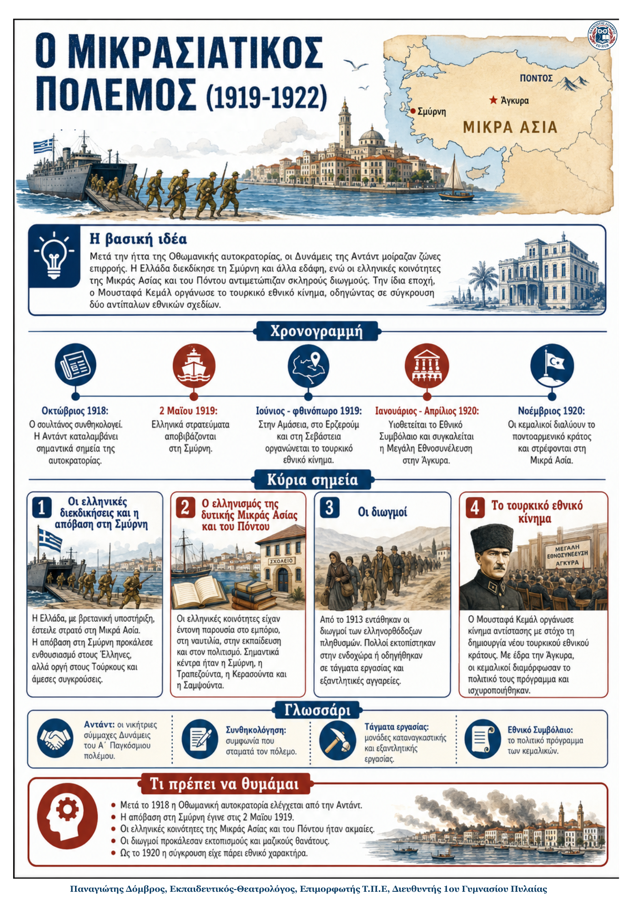

Δεν βρέθηκε η λέξη ή η φράση μέσα στην ενότητα.
1Η βασική ιδέα
Μετά την ήττα της Οθωμανικής αυτοκρατορίας, οι νικήτριες Δυνάμεις της Αντάντ μοίραζαν ζώνες επιρροής. Η Ελλάδα, με βρετανική υποστήριξη, διεκδίκησε τη Σμύρνη και άλλα εδάφη και αποβίβασε στρατό τον Μάιο του 1919. Την ίδια εποχή, οι ακμαίες ελληνικές κοινότητες της Μικράς Ασίας και του Πόντου αντιμετώπιζαν σκληρούς διωγμούς. Παράλληλα, ο Μουσταφά Κεμάλ οργάνωσε τουρκικό εθνικό κίνημα, προετοιμάζοντας τη σύγκρουση δύο αντίπαλων εθνικών σχεδίων.
2Ιστορικό πλαίσιο
- Τον Οκτώβριο του 1918 ο σουλτάνος συνθηκολόγησε και δυνάμεις της Αντάντ κατέλαβαν σημαντικά σημεία της αυτοκρατορίας.
- Ο Βενιζέλος ζήτησε δυτική Μικρά Ασία με κέντρο τη Σμύρνη, Ανατολική Θράκη, Ίμβρο και Τένεδο.
- Η Βρετανία υποστήριξε τις ελληνικές διεκδικήσεις, επειδή ήθελε να περιορίσει την Ιταλία και να προστατεύσει τα Στενά.
- Οι Έλληνες είχαν ισχυρή παρουσία στη δυτική Μικρά Ασία και στον Πόντο, αλλά πληθυσμιακή πλειονότητα μόνο στη Σμύρνη.
3Χρονογραμμή: από την ανακωχή στη σύγκρουση
| Οκτώβριος 1918 | Ο σουλτάνος συνθηκολογεί. Η Αντάντ καταλαμβάνει νευραλγικά σημεία της Οθωμανικής αυτοκρατορίας. |
|---|---|
| Απρίλιος - 2 Μαΐου 1919 | Το συμβούλιο του Παρισιού αναθέτει στην Ελλάδα να στείλει στρατό. Η απόβαση στη Σμύρνη προκαλεί ενθουσιασμό στους Έλληνες και οργή στους Τούρκους. |
| Ιούνιος - φθινόπωρο 1919 | Στην Αμάσεια, στο Ερζερούμ και στη Σεβάστεια οργανώνεται το τουρκικό εθνικό κίνημα με ηγέτη τον Μουσταφά Κεμάλ. |
| Ιανουάριος - Απρίλιος 1920 | Υιοθετείται το Εθνικό Συμβόλαιο. Μετά τη διάλυση της Βουλής από τους Βρετανούς, συγκαλείται στην Άγκυρα η Μεγάλη Εθνοσυνέλευση. |
| Νοέμβριος 1920 | Οι κεμαλικοί διαλύουν το ποντοαρμενικό κράτος και στρέφονται στη Μικρά Ασία. Η σύγκρουση παίρνει πλέον μορφή πολέμου δύο εθνικών στρατών. |
4Τα κύρια σημεία
1. Οι ελληνικές διεκδικήσεις και η απόβαση στη Σμύρνη
Τον Απρίλιο του 1919 το συμβούλιο του Παρισιού ανέθεσε στην Ελλάδα να στείλει στρατό στη Μικρά Ασία. Στις 2 Μαΐου οι ελληνικές δυνάμεις κατέλαβαν τη Σμύρνη και μια ζώνη περίπου 17.000 τετραγωνικών χιλιομέτρων. Οι Έλληνες είδαν την απόβαση ως απελευθέρωση, οι Τούρκοι ως κατοχή, και από την πρώτη ημέρα σημειώθηκαν βίαια επεισόδια. Οι Ιταλοί αντέδρασαν επίσης, επειδή διεκδικούσαν τη Σμύρνη.
52. Ο ελληνισμός της δυτικής Μικράς Ασίας και του Πόντου
Από τα μέσα του 19ου αιώνα οι ελληνικές κοινότητες αναπτύχθηκαν χάρη στις μεταρρυθμίσεις και στις οικονομικές ευκαιρίες. Στη Σμύρνη οι Έλληνες είχαν έντονη παρουσία στο εμπόριο, στη ναυτιλία, στις τράπεζες, στην εκπαίδευση και στον Τύπο. Στον Πόντο οργανωμένες κοινότητες ασχολούνταν με τη γεωργία και το εμπόριο, με κέντρα την Τραπεζούντα, την Κερασούντα και τη Σαμψούντα.
63. Οι διωγμοί και η ποντιακή κίνηση αυτονόμησης
Η άνοδος του τουρκικού εθνικισμού μετά το 1908 και οι οικονομικοί ανταγωνισμοί οδήγησαν σε συστηματικούς διωγμούς από το 1913. Περίπου 150.000 Έλληνες εκτοπίστηκαν στην ενδοχώρα, ενώ πολλοί άνδρες οδηγήθηκαν σε τάγματα εργασίας και εξοντωτικές αγγαρείες. Το 1920 ιδρύθηκε ομόσπονδο ποντοαρμενικό κράτος, αλλά οι κεμαλικοί το διέλυσαν τον Νοέμβριο.
74. Το τουρκικό εθνικό κίνημα
Ο Μουσταφά Κεμάλ οργάνωσε αντίσταση σε περιοχές που δεν ελέγχονταν από την Αντάντ. Στην Αμάσεια τέθηκε ο στόχος ενός νέου τουρκικού εθνικού κράτους, ενώ τα συνέδρια του Ερζερούμ και της Σεβάστειας ανέδειξαν τον Κεμάλ σε ηγέτη. Με έδρα την Άγκυρα, οι κεμαλικοί υιοθέτησαν το Εθνικό Συμβόλαιο και συγκάλεσαν τη Μεγάλη Εθνοσυνέλευση.
8Ορισμοί - γλωσσάρι
| Συνθηκολόγηση: συμφωνία που σταματά τον πόλεμο. | Αντάντ: οι νικήτριες σύμμαχες Δυνάμεις του Α΄ Παγκόσμιου πολέμου. |
|---|---|
| Τάγματα εργασίας: μονάδες καταναγκαστικής και εξαντλητικής εργασίας. | Αυτοδιάθεση: το δικαίωμα ενός λαού να αποφασίζει για το μέλλον του. |
| Εθνικό Συμβόλαιο: το πολιτικό πρόγραμμα των κεμαλικών για ανεξαρτησία. | Κοσμικό κράτος: κράτος όπου η πολιτική εξουσία δεν στηρίζεται στη θρησκεία. |
9Τι πρέπει να θυμάμαι
- Μετά το 1918, η Οθωμανική αυτοκρατορία βρέθηκε υπό τον έλεγχο της Αντάντ.
- Η Ελλάδα αποβιβάστηκε στη Σμύρνη στις 2 Μαΐου 1919 με εντολή του συμβουλίου του Παρισιού.
- Οι ελληνικές κοινότητες της Μικράς Ασίας και του Πόντου ήταν οικονομικά και πολιτιστικά δραστήριες.
- Οι διωγμοί από το 1913 προκάλεσαν εκτοπισμούς, καταναγκαστική εργασία και μαζικούς θανάτους.
- Ο Κεμάλ οργάνωσε τουρκικό εθνικό κράτος· στα τέλη του 1920 συγκρούονταν πλέον δύο εθνικά σχέδια.
